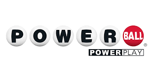

HTML, CSS, JavaScript, Node.js, Express.js, Axios, CORS
As a passionate computer scientist, I recently undertook the exciting project of building a Powerball Results Web Scraper, showcasing my skills in JavaScript, HTML, CSS, Node.js, Express.js, Git, and GitHub. This powerful tool is designed to efficiently gather up-to-date Powerball drawing results from various online sources.
The frontend of the application is crafted using a clean and intuitive HTML/CSS interface, providing users with a seamless experience. Leveraging the capabilities of JavaScript, the frontend dynamically interacts with the backend to display real-time results.
Node.js serves as the backbone of the project, handling server-side operations with speed and precision. Express.js is utilized to create a robust and scalable web application framework, ensuring a smooth flow of data between the frontend and backend components.
To facilitate version control and collaborative development, the entire project is hosted on GitHub. This allows for easy tracking of changes, seamless collaboration with other developers, and a transparent history of the development process.
Cyclic, a task scheduler for Node.js, plays a key role in automating the scraping process. It ensures periodic updates of Powerball drawing results, keeping the application's data fresh and accurate. Git is employed for efficient version control, allowing for easy rollback to previous states and collaboration with other developers.
This Powerball Results Web Scraper not only demonstrates my proficiency in various web technologies but also showcases my ability to create a comprehensive and reliable tool for retrieving and presenting critical information. It stands as a testament to my commitment to excellence in computer science and web development.